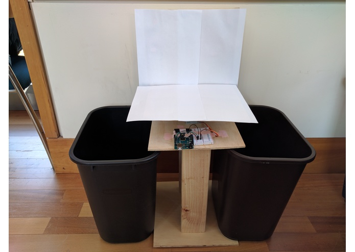
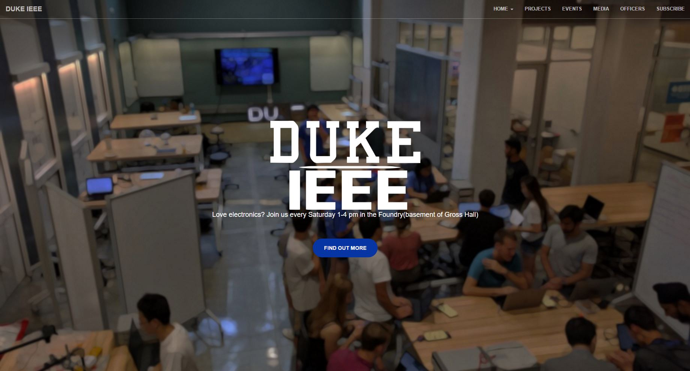
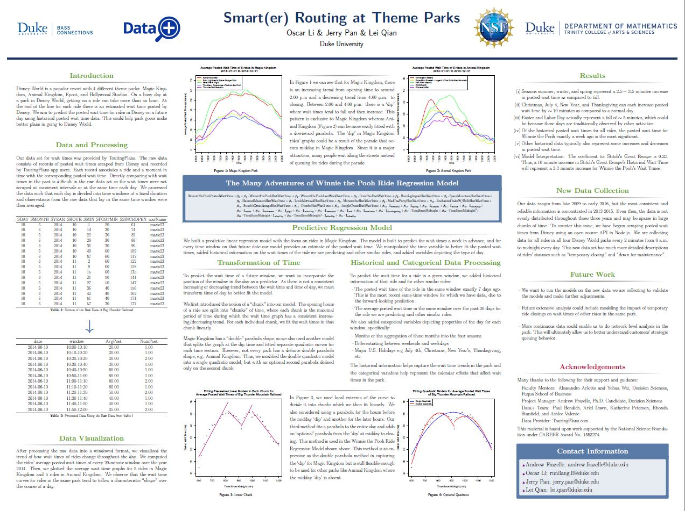
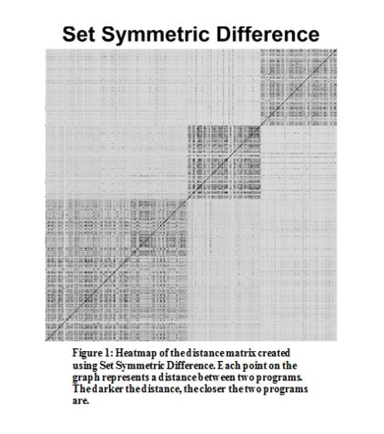

Jerry Pan
Duke computer science major passionate about the intersection of AI and Technology.
Hello, I am Jerry! I am a sophmore computer science major currently studying at Duke University. I am currently interested in software development, especially in the fields of machine learning and virtual reality.
My past experiences include predicting wait times at Disney, revamping and managing several websites for clubs at Duke, interning at a computer science lab at the North Carolina State University where I was working on an educational data mining project.
Here are a few fun facts about me:
Technologies used: Python, OpenCV, Audrino, Microsoft Computer Vision API
At HackDuke 2016, our team built a robot that seperated trash from recycable items using a webcam. I worked on the software of the project: developing the script to detect object placement, uploading the image to Microsoft Computer Vision API, and communicating with the audrino on how to sort. Check out the robot in action here. We won the best use of Microsoft API at HackDuke!
Technologies used: Bootstrap, HTML, CSS, Javascript
I became the IEEE webmaster near the end 2015. My weekly duties included updating the IEEE website that was made using wordpress. I wanted to make the website from scratch since wordpress had limited options in customization of the website. Over the past year, I worked on to build a new IEEE website and to be fair I did kind of cheat using a Bootstrap template. The website is viewable here. Although the website is published, I am constantly updating the contents and adding new features.
Technologies used: R, Nodejs, MySQL
Over the summer I worked in a group of 3 for 10 weeks to predict the wait times in Disney world. I worked a lot on processing and filtering the data into a easily manipulatable format. Helped with building and improving a variety of regression models to best fit the data. After discovering that our data was not sufficient, I wrote a Nodejs script to scrape wait times from Disney and store into a local database.
Technologies used: HTML, CSS, Javascript, SQL, PHP.
For our final project in CS190s, my group built a fully functional website that facilitates the exchange of textbooks between students at Duke. The website allows students to create an account and post listings of textbooks they finished using and allows other students to search the listings and contact the seller of the textbook they want.
Technologies used: Weka, Python, R.
I worked in the lab of Professor Tiffany Barnes at NC State over the summer to work on clustering programming tasks by n-grams of code. The following were some of the tasks I completed:
-Implmented the k-medoids algorithm in Python to cluster datasets.
-Developed heatmaps in R to visualize the clusters.
Feel free to contact me about anything!
My email is jerry dot pan at duke dot edu
This site was made by Jerry Pan using the Bootstrap Framework.